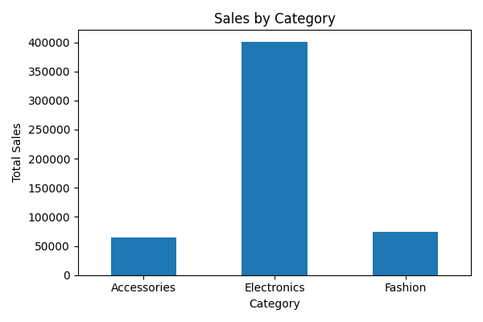
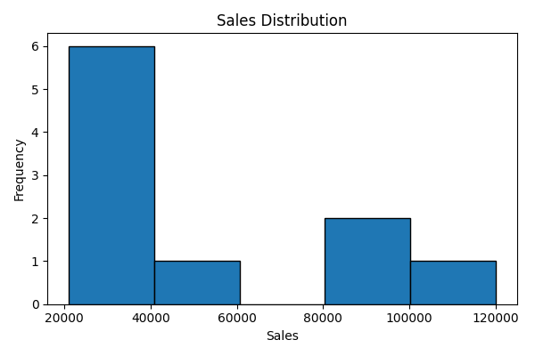
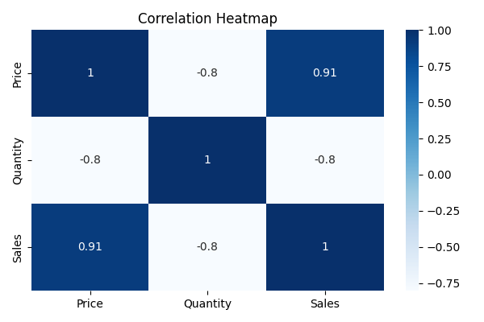

Exploratory Data Analysis (EDA)
Objective
Analyze dataset using statistics and visualizations.
Generate graphs such as bar charts, histograms,
and correlation heatmaps.
Dataset Used
sales_data.csv
Statistics Summary
- Total Categories: 3
- Highest Sales Category: Electronics
- Sales Distribution Analyzed
Graphs
Bar Chart

Histogram

Correlation Heatmap

Insights
- Electronics category has highest sales.
- Sales data shows variation across categories.
- Positive correlation exists between Price and Sales.
Conclusion
EDA was performed successfully using statistics and
visualizations. Insights were identified using
bar chart, histogram, and correlation heatmap.